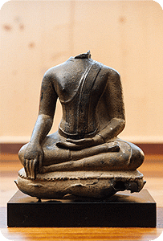

|
It might be unusual to publish a title such as LIVE ZEN on the Web, now, here, in Estonia – considering that to the public Zen is presumed to be a highly developed religious phenomenon rooted in the Japanese culture, standing out for its distinct aesthetics in everyday life, but unknown in its real intent. But listen to what was said some 700 years ago: Zen practice is not clarifying conceptual distinctions, but throwing away one’s preconceived views and notions and the sacred texts and all the rest, and piercing through the layers of coverings over the spring of self behind them. All the holy ones have turned within and sought in the self, and by this, went beyond all doubt. To turn within means all the twenty-four hours, and in every situation, to pierce, one by one, through the layers covering the self, deeper and deeper, to a place which cannot be described. It is when thinking comes to an end and making distinctions ceases, when wrong views and ideas disappear of themselves without having to be driven forth; when, without being sought, the true action and true impulse appear of themselves. It is when one can know what is the truth of the heart. Daikaku, 13th century from Osho: The Buddha: The Emptiness of the Heart, Ch 2 Zen does not rely on any belief system or dogma, it is not a religion, rather a religiousness. It has no interest in the past, its only interest is directed towards the experience of silence and ‘no-mind’. Awareness of the Here and Now is essential to Zen. Zen says there is nothing to achieve, whatever we are searching for already exists inside of us – merely covered by many layers of social conditioning. |